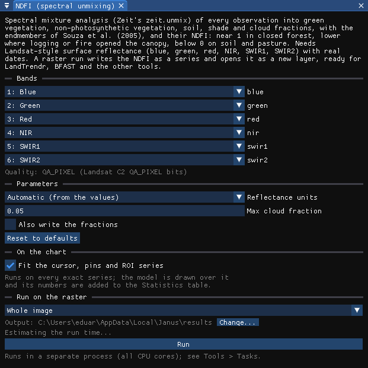
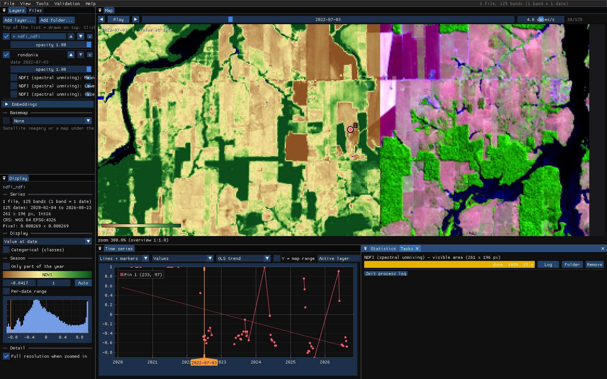
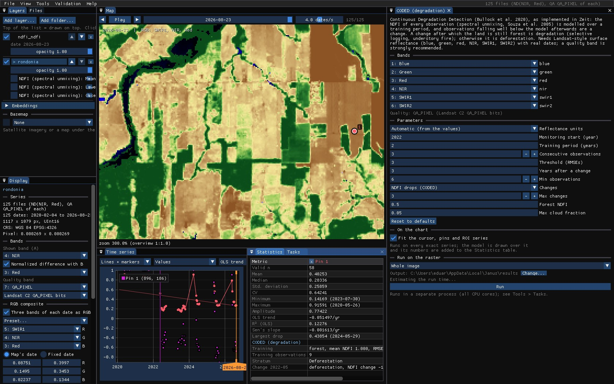
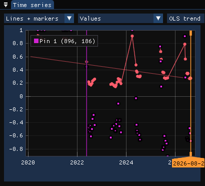
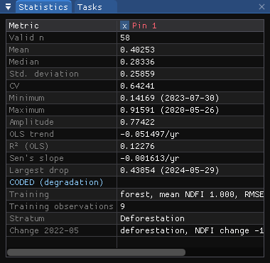
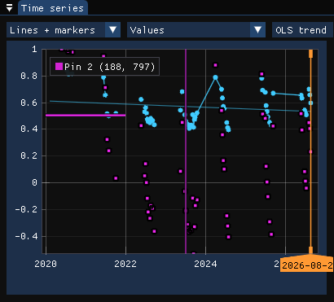
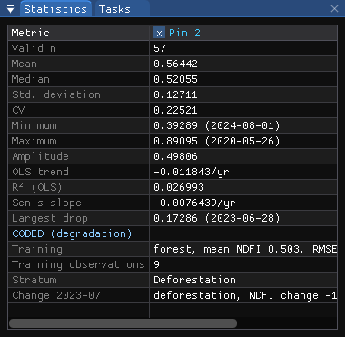
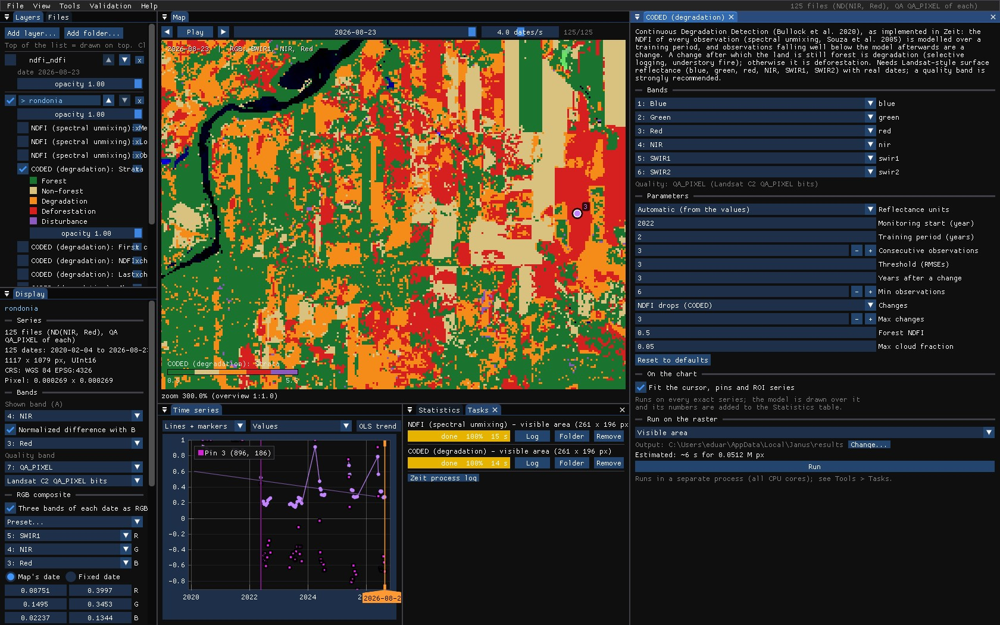
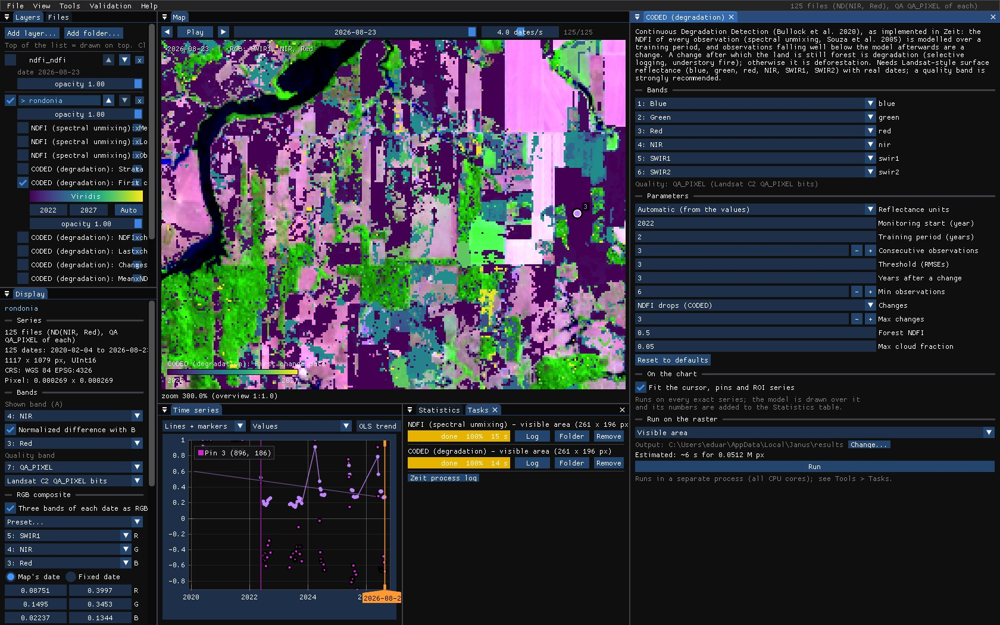
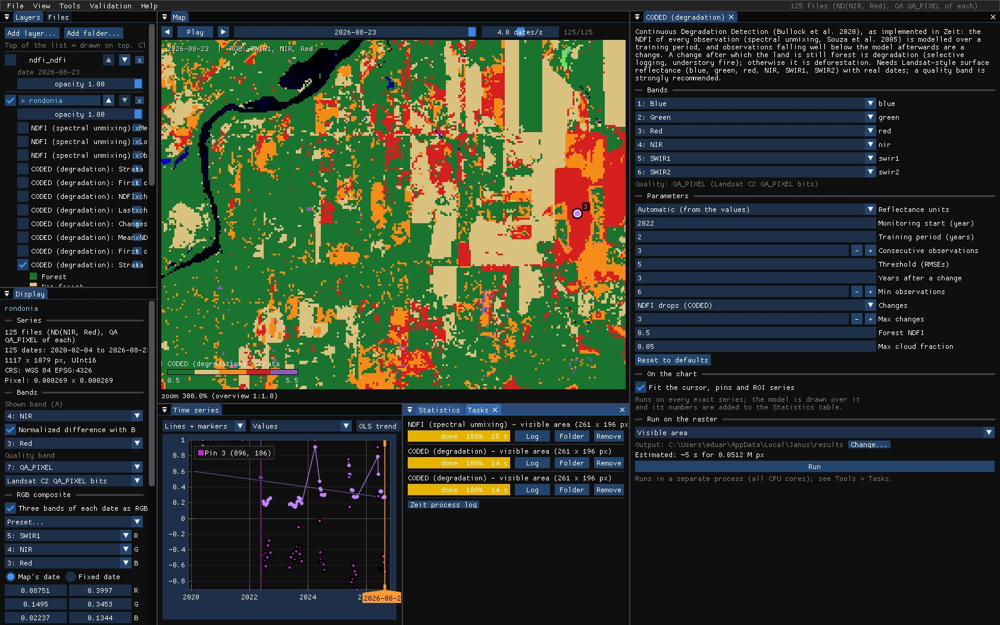

01The idea
Spectral mixture analysis reads each pixel's six reflectances as a mix of a few pure materials, the endmembers: green vegetation (GV), non-photosynthetic vegetation (NPV: dead wood, dry leaves), soil, shade and cloud. The NDFI (Normalized Difference Fraction Index, Souza et al. 2005) combines them:
NDFI = (GVshade − (NPV + soil)) / (GVshade + NPV + soil)
where GVshade is the green vegetation normalized by the shade. Closed forest is near 1; a canopy opened by logging or a fire drops, while it still reads as forest to the NDVI; pasture and bare soil go below 0.
CODED (Continuous Degradation Detection, Bullock et al. 2020) fits a harmonic model of the NDFI over a training period, then watches every later observation: a few in a row far below the model are a change. After it, a new model; if its mean NDFI is still that of a forest, the change was degradation, otherwise deforestation.
Both need Landsat-style surface reflectance (blue, green, red, NIR, SWIR1, SWIR2) with real dates; CODED also needs at least two observations a year, and a quality band helps both.
02The example
The same Landsat 8 and 9 series as the CCDC guide: 125 dates, February 2020 to August 2026, of central Rondônia, with its QA_PIXEL band. The map is zoomed in on a forest cleared in May–June 2022, 261 × 196 pixels around it.
How these screenshots were made
The data is the author's own stack, not downloaded: Landsat 8/9 Collection 2 Level-2 of Rondônia, 2020–2026, a GeoTIFF per date, made from a Google Earth Engine stack and its CSV of dates (the same as the CCDC guide's). These commands remake the screenshots after the interface changes.
A folder of the Landsat dates, cut to the area (west, south, east, north):
python tools/make_guide_data.py landsat STACK DATES folder -63.36 -10.37 -63.06 -10.08The screenshots, saved as PNGs in the folder shots:
janus --shots coded folder shotsThe tour drives the guide's steps in a window of 1680 × 1050 and saves the window and its panels as PNGs in shots; the full-window ones are then converted to JPEG.
03The NDFI
Tools → Spectral analysis → NDFI (spectral unmixing) unmixes every observation with the endmembers of Souza et al. (2005). Run on the raster, it writes the NDFI of every date as a new series, opened as a layer over the others, ready for LandTrendr, BFAST or the agreement; and three maps: the mean NDFI, the lowest, and the observations used.



Max cloud fraction (0.05) leaves out the observations whose unmixed cloud fraction is larger: thin clouds and haze the quality band missed.
04CODED on the chart
Tools → Change detection → CODED (degradation). Its bands are found as for CCDC. On the chart, with the layer showing a normalized difference, CODED adds the NDFI of each observation, the training mean, and a vertical line at each change.






The forest opened in 2021 and partly grown back reads differently:




In Janus
- Open the same folder of Landsat dates (File → Open folder...), NIR as the band and red for the normalized difference.
- Drop a pin on the forest cleared in May–June 2022.
- Open Tools → Change detection → CODED (degradation), set Monitoring starts to 2022 and Training years to 2, and tick Fit the cursor, pins and ROI series.
- The chart draws the NDFI and the changes CODED finds on it.
In Python
"""Janus 1.17.0 (2026-11-07): pin 1 of landsat, reproduced outside Janus with Zeit.
Needs: pip install "zeit-cdts>=3.2.1"
"""
import zeit
# Pin 1: column 896, row 186 of the files, its centre at x -63.1191015, y -10.1301365 (EPSG:4326)
src = "landsat"
qa = zeit.load_raster(src, band=7, masked=True, pixel=(896, 186)) # QA_PIXEL
bands_cube = zeit.load_raster(
src, bands={"blue": 1, "green": 2, "red": 3, "nir": 4, "swir1": 5, "swir2": 6}, scale=True,
masked=True, pixel=(896, 186)
)
bands_cube = bands_cube.where(zeit.qa_to_fmask(qa, "landsat_c2") <= 1) # only the clear observations (Fmask 0 and 1)
result = zeit.coded(bands_cube, start=2022.0, train_years=2.0)
print(result)
The code Janus’s Copy Python button gives for this pixel and these parameters; it runs with Zeit: the header of the script says which Zeit it needs (pip install zeit-cdts, version 3.2 or later; 3.2.1 for CCDC, CODED and S-CCD). Copy and Download give the same script, with the file’s name as it is here (put the script beside your data).
05The parameters
| Parameter | Default | What it does |
|---|---|---|
| Reflectance units | auto | The endmembers are reflectances: 0–1, × 10000 or Collection 2 digital numbers, detected from the values. |
| Monitoring start | 0 | The year monitoring starts; the training period is before it. 0: the training starts with the series. Here 2022. |
| Training period | 3 | Years of training, whose NDFI model the monitoring compares with. Here 2, all the series has before 2022. |
| Consecutive observations | 3 | Observations in a row beyond the threshold that make a change. |
| Threshold (RMSEs) | 3 | How far below the model, in RMSEs of the training fit. |
| Years after a change | 3 | Modelled as the land after a change, and the least time between two changes. |
| Min observations | 6 | Least observations to fit a model. |
| Changes | loss | Only drops of the NDFI, as CODED, or rises too. |
| Max changes | 3 | Changes kept per pixel. |
| Forest NDFI | 0.5 | A model with a mean NDFI at least this is forest: before the change (forest or not), after it (degradation or deforestation). |
| Max cloud fraction | 0.05 | Observations with more unmixed cloud are left out. |
06The maps
Run over the visible area (14 s here; about 80 s for the whole 1.2 million pixels), CODED maps:


| Map | Meaning |
|---|---|
| Strata | Forest, non-forest, degradation, deforestation, or disturbance (a change outside forest). |
| First / last change date | The earliest and the latest change. |
| NDFI change at the first change | The NDFI after it minus before it. |
| Changes | How many changes. |
| Mean NDFI of the training period | What the land was before. |


07How strict
With only two years of training, about nine clear observations, the model of a forest pixel is tight, and ordinary variation from one dry season to the next crosses 3 RMSEs: above, much of the standing forest reads as degraded. At 5 RMSEs only the strong drops are left: the clearings, in red, and far less orange. There is no right threshold in general. Check it on pins over forest you know untouched and over logging you know of, and give CODED a longer training period when the series allows.

08What next
- Every band, every break: CCDC on the same series.
- The NDFI series in other tools: LandTrendr on yearly NDFI composites, BFAST on a regular NDFI series.
- Validate the strata: they are a map of classes with change in it; see the Validation guide.
- Script it:
zeit.unmixandzeit.codedin Python.
09References
- Bullock, E. L., Woodcock, C. E., Olofsson, P. (2020). Monitoring tropical forest degradation using spectral unmixing and Landsat time series analysis. Remote Sensing of Environment, 238, 110968.
- Souza, C. M., Roberts, D. A., Cochrane, M. A. (2005). Combining spectral and spatial information to map canopy damage from selective logging and forest fires. Remote Sensing of Environment, 98, 329–343.
- Zeit: the change detection library behind the tools of Janus.